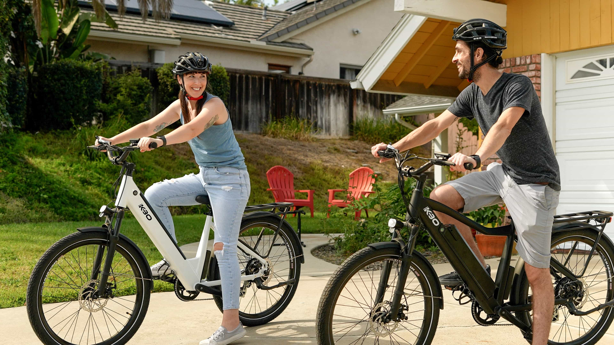
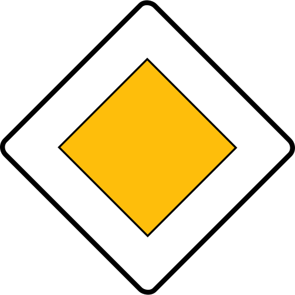
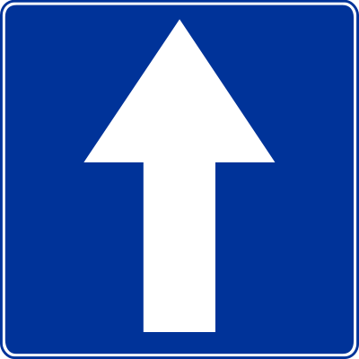
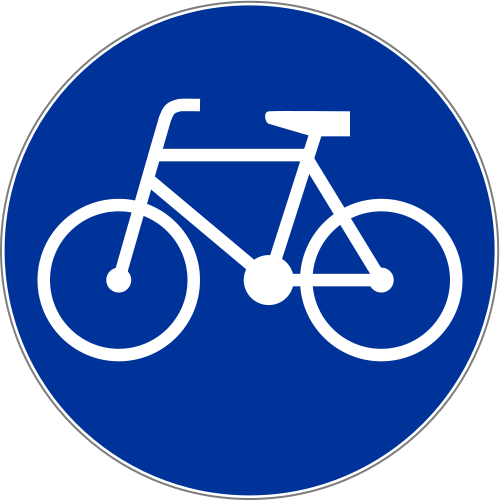
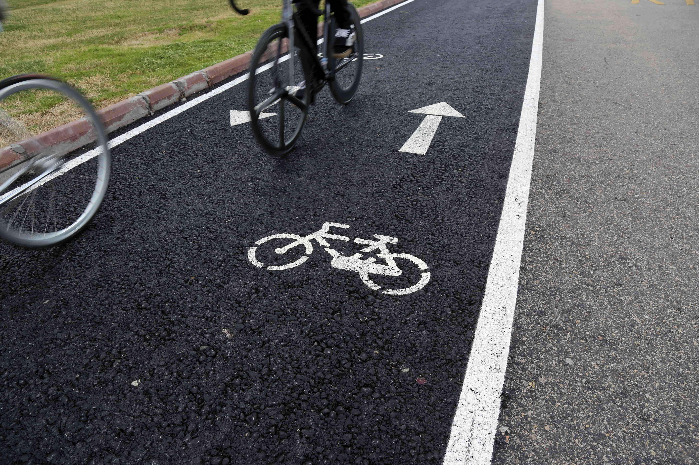
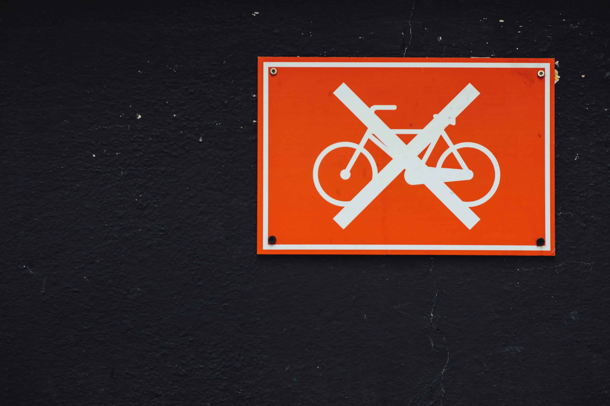
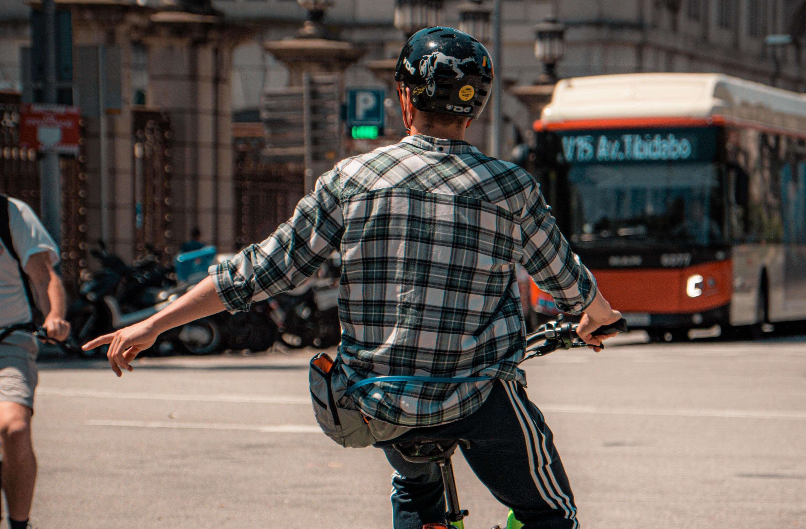

1.Zanim rozpoczniesz.
Przed rozpoczęciem kursu musisz wiedzieć o paru ważnych rzeczach. Zgodnie z ustawą z dnia 5 stycznia 2011 r. o kierujących pojazdami, dokumentem zezwalającym do kierowania rowerem jest karta rowerowa lub prawo jazdy.
Aby zdobyć kartę rowerową musisz przede wszystkim zdać egzamin. Kolejnym ważnym wymogiem jest ukończenie dziesiątego roku życia i podstawowe zdolności ruchowe i sprawnościowe pozwalające na bezpieczne kierowanie rowerem.
Kartę rowerową wydaje nieodpłatnie, za pisemną zgodą rodzica lub opiekuna dyrektor szkoły lub dyrektor wojewódzkiego ośrodka ruchu drogowego.
2.Podstawowe pojęcia.
Droga - droga to tak naprawdę całościowa nazwa na jezdnie dla samochodów, pobocze, chodnik i drogę dla rowerów. Droga jest miejscem ruchu pojazdów, przemieszczania się pieszych i rowerów.
Droga z pierszeństwem przejazdu to droga oznaczona poniższym znakiem. Jadąc tą drogą masz pierwszeństwo przejazdu przed innymi uczestnikami ruchu. 
Droga podporządkowana to droga oznaczona znakiem
pokazanym poniżej. W przypadku tej drogi zawsze musisz ustąpić
pierwszeństwa innym uczestnikom ruchu.

Czym właściwie jest to ustąpienie pierszeństwa? W odniesieniu do pojazdu jest to powstrzymanie się od ruchu, wymuszającego na nim zatrzymanie się lub zmianę kierunku jazdy. W przypadku pieszego jest to zachowanie nie powodujące zatrzymania się pieszego czy jego zwolnienia.
Droga jednokierunkowa - to droga oznakowana odpowiednim znakiem pokazanym poniżej. Ruch na tej drodze odbywa się tylko w jednym kierunku. 
Pojazd uprzywilejowany - pojazd ten wysyła charakterystyczne sygnały świetlne i dźwiękowe. Przykładami takich pojazdów są: ambulans, radiowóz policyjny czy wóz strażacki.
Prawna definicja roweru - to pojazd o szerokości nieprzekraczającej 90 centrymetrów, poruszany za pomocą siły mięśni osoby prowadzącej.
Droga dla rowerów - droga lub część drogi oznaczona odpowiednim znakiem ukazanym poniżej. Jest przeznaczna wyłącznie do ruchu rowerów. Jest ona oddzielona od jezdni. 
Przejazd dla rowerzystów - to powierzchnia jezdni lub torowiska przeznaczona do przejeżdżania przez rowerzystów.
Szczególna ostrożność - to sytuacja, w której musimy zwiększyć naszą uwagę i koncentrację ze względu na zmieniające się warunki na drodze, tak aby odpowiednio szybko na nie reagować.
3.Gdzie możesz poruszać się rowerem.
Pierwszym miejscem przeznaczonym do ruchu rowerzystów jest droga dla rowerów. Jak sama nazwa wskazuje, jest ona tylko do użytku rowerzystów.
Drugą opcją jest droga dla rowerów i pieszych. Na tej drodze rowerzysta musi zachować szczególną ostrożność i ustępować pierszeństwa pieszym. Taka droga podzielona jest na dwie części - dla rowerzystów i dla pieszych. Oznaczenie poszczególnych części jest widoczne poziomo na drodze lub na znaku informacyjnym.
Trzecią możliwością poruszania się rowerem jest pas ruchu dla rowerów. To wydzielona znakami część jezdni, popularna szczególnie w dużych miastach.
A co jeżeli nie ma żadnej z tych dróg? Wtedy należy poruszać się poboczem. Poruszanie się poboczem jest jednak zakazane kiedy pobocze jest uznawane za nienadające się do jazdy, lub poruszanie się rowerem utrudniłoby ruch pieszych.
Czy mogę poruszać się jezdnią? Tak, jest to dozwolone ale tylko dla osób powyżej dziesiątego roku życia. Kierujący rowerem musi poruszać się tak samo jak pojazdy.
4.Czego nie wolno ci podczas jazdy rowerem.
1. Poruszania się po jezdni obok innego uczestnika ruchu drogowego,
2. jazdy bez trzymania jednej z rąk na kierownicy i nóg na pedałach,
3. doczepiania się (trzymania się) innych pojazdów,
4. wyprzedzania na przejściu dla pieszych i na przejeździe dla rowerzystów,
5. wjeżdżania na autostrady i drogi ekspresowe,
6. zawracania na mostach, wiaduktach i w tunelach.
5.Podstawowe manewry podczas jazdy rowerem.
Włączanie się do ruchu - to manewr rozpoczynający jazdę po zatrzymaniu lub postoju. Włączaniem do ruchu nazywywamy między innymi sytuacje: wjazdu na drogę z nieruchomości, wjazdu na drogę główną z drogi wewnętrznej, wjazdu na drogę ze strefy zamieszkania, wjazdu na drogę z drogi gruntowej, wjazdu na jezdnię z pobocza lub z chodnika.
Zmiana pasa ruchu - manewr polegający na zmianie pozycji pojazdu w stosunku do krawędzi jezdni ale zachowując nadal ten sam kierunek ruchu. Podczas zmiany pasa ruchu musimy pamiętać, że pierszeństwo zmiany pasa ma pojazd jadący po prawej stronie jezdni.
Zmiana kierunku ruchu - prościej mówiąc jest to po prostu manewr skrętu w prawo, lewo bądź zawracanie. Tak więc przykładowo pokonywanie zakrętu nie jest manewrem zmiany kierunku ruchu.
Zawracanie - to manewr polegający na zmianie kierunku ruchu na przeciwny ale na tej samej drodze. Nie wolno zawracać na mostach, wiaduktach, w tunelach i na drogach jednokierunkowych.
Wymijanie - to manewr polegający przejechaniu obok innego uczestnika ruchu poruszającego się w kierunku przeciwnym do naszego.
Omijanie - to manewr polegający na przejechaniu obok uczestnika ruchu nieporuszającego się lub obok przeszkody. Omijanie musi być zasygnalizowane tak jak skręcanie. Nie wolno omijać na przejściu dla pieszych i na przejeździe kolejowym.
Wyprzedzanie - to przejeżdżanie obok uczeztnika ruchu poruszającego się w tym samym kierunku, jadącego wolniej od nas. Przy wykonywaniu tego manewru musisz pamiętać o zachowaniu odstępu minimum jednego metra między wyprzedzanym pojazdem. Wyprzedzanie pojazdu możliwe jest tylko z jego lewej strony. Nie wolno wyprzedzać na przejściu dla pieszych, na przejazdach kolejowych i nie wolno wyprzedzić ci pojazdu uprzywilejowanego na obszarze zabudowanym.
Ważna informacja. Wyżej wymienione manewry są momentami, w których od kierującego rowerem wymagane jest zachowanie szczególnej ostrożności. Przed wykonaniem, któregoś z tych manewrów zawsze musisz zasygnalizować to podniesieniem lewej lub prawej ręki. Pamiętaj o dokładnym sprawdzeniu i upewnieniu się czy aby na pewno manewr, który chcesz wykonać jest w 100% bezpieczny.